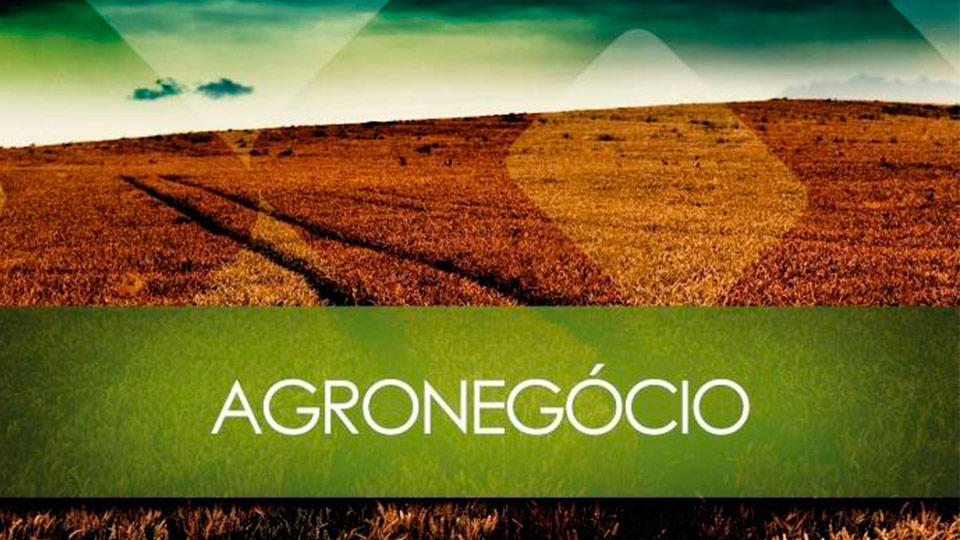

CURSO DE TECNOLOGIA EM AGRONEGÓCIO
 Objetivos do curso Formar profissionais com competências tanto em tecnologias de gestão, quanto de produtos e processos, visando o entendimento das principais questões relacionadas ao Agronegócio brasileiro e produzindo, como conseqüência, direta ou indireta, intervenção na multiplicidade de variáveis dos segmentos agroindustriais públicos ou privados. Além disso, por meio de permanente atualização e investigação tecnológica, pretende-se construir conhecimentos relevantes para a sociedade e igualmente contribuir com a discussão das políticas públicas e privadas relativas ao setor. Áreas de atuação Empresas e organizações do Agronegócio bem como instituições de ensino e pesquisa.